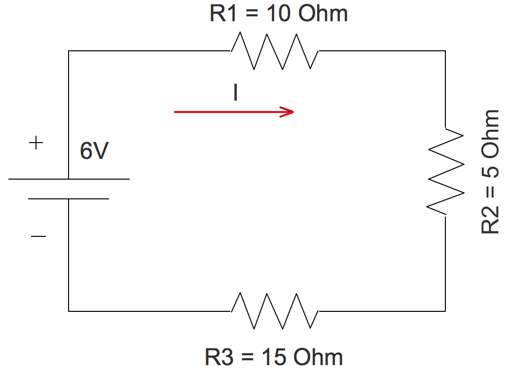

Primer periodo
Topic:
Principios de robotica.
Subtopic:
1. Principios de circuitos.
2. Simulaciòn de circuitos.
3.circuitos (serie,paralelo y mixto).
4.Arduino
Actividades
Welcome Class
Bimestral
1.Ingreso teorico
2.Teòrico concurso de preguntas(tomar captura de pantalla del mejor resutado con fecha y hora).
Las capturas en PowerPoint con hoja de presentaciòn

Sesion 7:
Simulaciòn Tinkercad semaforo con Arduino uno
Ingreso Tinkercad 801 clic aqui
Ingreso Tinkercad 802 clic aqui
Actividad en clase
1.En el cuaderno apuntar la Explicación del codigo.
Explicación del código:
Definición de pines:
Se definen las constantes rojo, amarillo y verde para los pines digitales donde se conectan los LEDs del semáforo. Puedes cambiar estos pines según tu configuración.
Función setup():
Se configuran los pines definidos como salidas usando la función pinMode().
Función loop():
Esta función se ejecuta repetidamente.
Se enciende el LED rojo y se apaga el verde durante 5 segundos.
Se apaga el rojo y se enciende el amarillo durante 2 segundos.
Se apaga el amarillo y se enciende el verde durante 5 segundos.
Se apaga el verde y se enciende el amarillo durante 2 segundos.
La función delay() se utiliza para pausar la ejecución del programa durante un tiempo especificado en milisegundos.
Consideraciones adicionales:
Conexión de los LEDs:
Asegúrate de conectar los LEDs a los pines correctos y de utilizar resistencias para limitar la corriente y evitar que se quemen.
Tiempo de espera:
Puedes ajustar los tiempos de espera en la función delay() para modificar la duración de cada color del semáforo.
2.Tomar apuntes de codigo:
 còdigo
còdigo
Recojo cuaderno marcado con fecha de hoy y los apuntes
Traer la siguiente clase Corta frios o pelacable si no tiene ninguno por lo menos un corta uñas
God bless you- ברוך ה׳ לעולם
Sesion 1:
Actividad
1 First period tematica circuitos y tecnologia en el cuaderno.
2 Investigar cual es el codigo de colores de resistencias y copiarlo en el cuaderno.
3.Investigar que es un circuito serie, Paralelo y Mixto.
4.Investigar que es la ley de ohm.
5. Calcular la corriente del circuito de la imagen.
Sesion 2:
Actividad
1.Completar la sesion numero uno.
2.Investigar que es tinkercad.
3.Dibujar las herramientas de tinkercad.
3.¿Que es simulaciòn?.
4.Simular un circuito serie, paralelo y mixto con bombillos 5 led con resistencias
5. Realizar el montaje real en un protoboard

Sesion 3:
El video se proyectara en la pantalla del salòn.(guardar silencio)
Actividad
1.Completar la sesiòn 2 correspondiente a las consultas del cuaderno.
1.1 Segun el video como puedo aplicar la simulaciòn(En el cuaderno).
1.2 Para que sirve la simulaciòn de circuitos.(En el cuaderno)
2.Consultar en el cuaderno ¿Que es una onda cuadrada?
¿Que es un microchip?
¿Que es el microchip 555 y su funciòn?
3.Circuito encendido de un bombillo funcionando(simulaciòn y real)
4.Circuito con minimo 5 leds en serie y paralelo(simulaciòn y real)funcionando
5.Circuito onda cuadrada (simulado)funcionando
Enlace simulador
Tarea:
Traer los componentes 5 led rojo y 5 verdes, protoboar, cables macho macho, cargador o bateria con portabateria, resistencias
Traer carton paja para construir un semaforo peatonal,silicona, la medidas del semaforo son las mismas del protoboard
Los estudiantes que logren simular la onda cuadrada pueden traer los materiales correspondientes.
Sesion 4:
Simulaciòn Tinkercad
Ingreso Tinkercad clic aqui
Componentes (Copiar en el cuaderno)
Circuito integrado 555: Este es el corazón del circuito. El 555 es un temporizador que puede generar señales de onda cuadrada.
Resistencias:
Dos resistencias de 1kΩ (R1 y R2): Estas resistencias controlan la carga y descarga del condensador, lo que determina la frecuencia de la onda cuadrada.
Dos resistencias de 220Ω (RLED1 y RLED2): Estas resistencias limitan la corriente que pasa a través de los LEDs para protegerlos.
Condensador electrolítico de 10µF (C1): Este condensador se carga y descarga a través de las resistencias, lo que genera la oscilación.
Diodos LED (LED1 y LED2): Estos LEDs se encenderán y apagarán alternadamente, siguiendo la onda cuadrada generada por el 555.
Cables jumper: Estos cables se utilizan para conectar los componentes en la protoboard.
Protoboard: Esta placa permite montar los componentes y conectar los cables de forma fácil y sin necesidad de soldar.

Actividad en clase
Sesiòn 4
1. Los estudiantes que trajieron los materiales, montan un circuito paralelo con 5 led rojos y otro estudiante 5 led verdes, recortar el carton para dar forma de semaforo peatonal.
2. Los estudiantes que Terminen el semaforo deben programar el semaforo .Montar la onda cuadrada y el semaforo simulado, para jugar luz verde y luz roja.
3. Consultar que es arduino, cuantas clases hay? que voltajes manejan.
4. Consultar que es el void setup y el void loop
5. Consultar que es una variable ,una biblioteca en Arduino, que tipos de sensores se pueden utilizar en Arduino
God bless you- ברוך ה׳ לעולם


{kind=link}
{kind=link}
Sesion 5: /02/2025

Diam amet eos at no eos
Sed kasd sea sed at elitr sed ipsum justo, sit nonumy diam eirmod, duo et sed sit eirmod kasd clita tempor dolor stet lorem. Tempor ipsum justo amet stet...
Read MoreSesion 6: /02/2025

Diam amet eos at no eos
Sed kasd sea sed at elitr sed ipsum justo, sit nonumy diam eirmod, duo et sed sit eirmod kasd clita tempor dolor stet lorem. Tempor ipsum justo amet stet...
Read More